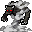

火葬の矢 Pyre Arrow
英語版 CrawlWiki の記事「Pyre Arrow」(0.31 向け、2026-06-11 版)の翻訳です。原文の著者は編集履歴をご覧ください。
この記事は 0.31 の時点の内容で、最新の 0.34 とは違うところがあるかもしれません。
| 液体の炎の塊を撃ち出し、指定したモンスターにまとわりつかせて、数ターンにわたって鎧を無視する炎のダメージを与える。犠牲者は移動すればずっと早く火を消すことができる。
対象が実体を持たない場合、液体の炎はまとわりつかない。 |
火葬の矢はモンスター専用の呪文で、対象に焼夷(焼夷の炎)の状態を与え、時間をかけて炎のダメージを与える。動き回るか水に入れば、この状態はすぐに終わる。
火葬の矢を唱える敵は次のとおり。
- 2
 バルログ(ダメージ 2d14/ターン)
バルログ(ダメージ 2d14/ターン) - B
 ミイデラゴミムシ(ダメージ 2d3/ターン)
ミイデラゴミムシ(ダメージ 2d3/ターン) - e
 闇エルフの炎術師(ダメージ 2d9/ターン)
闇エルフの炎術師(ダメージ 2d9/ターン) - 3

噴煙のデーモン(ダメージ 2d8/ターン) - y
 太陽の蛾(ダメージ 2d9/ターン)
太陽の蛾(ダメージ 2d9/ターン)

ここに示したダメージは1ターンあたりのもので、この呪文は命中した瞬間にはダメージを与えない。
変更履歴
- 0.31 より前は、この呪文は焼夷の炎(射程つき)(Sticky Flame Range)と呼ばれていた。1ターンあたりのダメージは今より小さく、焼夷の状態は移動の影響を受けなかった。